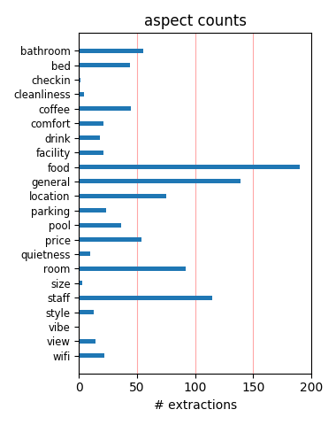
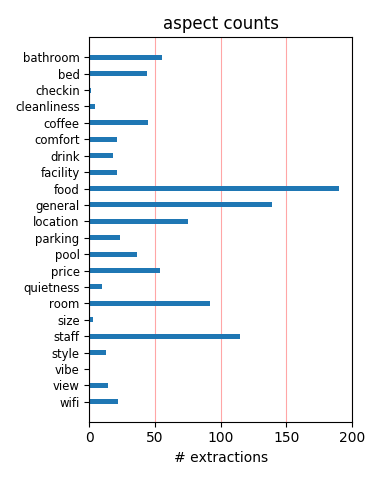

I stayed 4 nights at the hotel and all I can tell is how satisfied I was with my stay. Breakfast, rooms, front desk, amenities, pool were very convenient. The hotel has the perfect location. Thanks to the manager, Adriana for all her attention and service.
This hotel is very good to stay with family. It has a good room, well furnished, a friendly staff and a good breakfast (rare in US hotels). When I stayed there the price was low compared to a similar hotel. It worths a lot. Free park lot. It's close to Universal.
Excellent all round breakfast basic but good start to day,nice and peacefull area but close enough to I Drive and all parks for easy access. Pleasant staff very helpfull nothing too much,room cleaned every day to good standard,all I can do is recommend very highly.
The staff is very friendly, the room is clean and the location is great! Very close to the Universal parks and Sea World. It is also close to a lot of good restaurants and bars. The breakfast was amazing with a lot of options to all tastes. I loved the waffle machine!
Stayed here for two weeks with a 2 year old and a 11 month old. Nothing for children to do and the breakfast they serve is truly disgusting. We ate out even though it was free. Otherwise, it was a pleasant stay and the staff were very friendly and nice. Wouldn't go back, but it was nice.
we have just arrived back from orlando and have had an excellent holiday hotel is clean and reception were very helpful.breakfast each morning is great so you dont have to go to sizzlers or ponderosa.hotel pool was clean and they supply towel at the pool. the sun was on the pool all day.
This hotel is fab, its in a great quiet location but only a few mins walk to I-Drive, staff always friendly, nice clean rooms and lovely pool are. Breakfast always plentiful and a great start to the day. Recommend Millers Ale House for dinner, amazing food at great prices. Would certainly stay again.
The hotel was clean, the guest services reps were very welcoming and willing to help in anyway they could. Room service did excellent on cleaning the room and providing us with clean towel everyday. The hotel provided a good complete breakfast bar every morning, with reps there to assist you prepare your food.
I went to a congress in the Convention Center, that is very close from the hotel, the hotel is very close to a Mall., too.The rooms are very good and cozy. The staff have a small number of people, but they are very frindly and efficient. The breakfast is free and rezonable, I would like more cheese. Overall it is a fantastic hotel
I've stayed at this hotel many times over the last few years and it is always my first choice when staying in Orlando. The location is fabulous and the staff are friendly and helpful. our recent stay in November was short as we stayed only two nights prior to our cruise and one night post cruise but already looking forward to returning in April!
That was a perfect stay. The rooms are large and very clean. The staff extremely friendly and the brekfast great. The first night we stayed at a room two rooms to the elevator. When the elevators were busy you could hear the sound of it so we couldn't sleep from 6 am on. The front desk changed our room immediately and we were fully satisfied the second night. Wonderful!
We (two adults) stayed there last week. Location is great, close to the Convention Centre and backing onto I-Drive (3 min walk to Pointe Orlando). Staff are very helpful, and the hotel is clean and well maintained. Pool was lovely and the laundry facilities and free internet access are botha big plus. Next time in Orlando, this will be our base. Would heartily recommend it!
Stayed there two nights for a convention. It is within walking distance so it was very convenient. The staff is very friendly and the rooms are up to Hampton Inn standards - clean, roomy, and fresh. I made the mistake of leaving a sport coat in the closet. When I called to follow-up, they were very friendly and helpful. I will definitely use this property every time I go to Orlando.
Needed to grab a night in Orlando for meetings the next day, and decided on the tried and true Hampton Inn chain. Bad choice . . . This Hampton Inn was a little more worse for wear . . . and the walls were paper thin. Every time the AC would come on it would roar. Reserved a King bed weeks ago, and ended up with two Fulls . . . room felt dirty . . . The worst pillows EVER! Lots of better choices in Orlando!
Had a fantastic 2 week stay at this hotel. Staff very friendly and was made to feel welcome the moment we arrived. Rachel on reception is a credit to the hotel and does her job extremely well. The breakfast each morning was okay, not great but adequate. Would of been nice to have a safe in our room but apparently there are safe deposit boxes available. Overall a great experience and would definitely stay here again.
Just got back home from this hotel, stayed there for 2 weeks, breakfast was included in the price and was very good with lots of choices. Staff were very helpful. We got the use of a safe free for the full 2 weeks. Hairdryer, Iron, Ironing board and coffee maker were all in the room. It was only a short walk through the carparks to International Drive with many restaurants nearby. Would recommend this hotal to all....
Am still wondering how this hotel earned such a high rating here on Trip Advisor; it's the first time I've ever been let down here. Yes, the place was OK for one night in Orlando, but number two among all other choices? Positives: reasonable rates; above average continental breakfast; reasonably comfortable beds. Negatives: surly, unhelpful night manager; frayed around the edges and in need of a facelift; very average rooms.
we stayed 4 nights from 25th dec [ two rooms - celebrating our 30th wedding anniversary]. we were delighted with our choice [we always checkout trip advisor]. we paid £25 per room per night, and that included a very ample breakfast - the "robust" coffee gave us a kick-start!! the staff were all excellent, and went out of their way to help! although the hotel was full, the rooms were quiet and very clean. ideal position - much quieter than i-drive.
I've stayed here a few times on business. I love that fact that parking, breakfast and internet are free. I was at the Boca Raton Resort the week before and paid for breakfast as well as a valet fee and a resort fee. While the grounds, rooms and view were extremely nice I'd rather have the extra money to spend on other things. The staff at the Hampton Inn have always been courteous and helpful. This will continue to be my first choice for the Orlando area.
We have just returned from the best holiday ever. The hotel was spotless and is in a great location. The staff were always very friendly. Free tea and coffee/free internet connection/free breakfast/free pool towels all made the stay very special. I would recommend this hotel to anyone looking for possibly the best value for money hotel in Florida. The rooms are a good size and it is only a 2 minute walk on to International drive. Keep up the good work Hampton Inn.
Great Hotel. On arrival asked if there was a fridge in our room, within ten minutes one was delivered (no charge). Clean rooms, white bedding. All staff really lovely, cleaners work really hard. Free tea & coffee all day. Lovely quiet hotel and close to all restaurants. Our favourite TGI Fridays and Millers Ale House (Wednesday night lobster night), excellent value for money. Plenty of choice for breakfast but the only downside is that I'm sure they use powder for the eggs.
Stayed one night only, but always love Hampton Inns because of comfortable beds, free (good!) breakfast, free parking, free internet, free newspaper and pool. We were able to be placed on the same floor as friends of ours and it was quiet at night. Got our wake up call as expected and not a single problem. I had an outstanding travel deal as well, so the value is outstanding. Stayed elsewhere, which was great, butwould have had to spend an extra 100 to get what was free here.
hotel was in a great location, close to point orlando and a short drive to universal and disney parks breakfast was great they even did bags that you could take with you that came in handy when rushing to get to the parks in the morning. hotel staff were very helpfull and there were always someone to ask questions. the warm cookies and milk were great too they really made the place feel more like a home than a hotel i will be staying here again and would recomend it to anyone!
Just returned to Brazil from a 15 days vacation togheter with my wife and two daughters. The hotel is very well located, you can walk to eat and shop. The staff are very friendly, and cooperative, breakfast is great, cookies at 5PM, excellent pool, very neat and well maintained instalations, free internet. Is really worth to stay there, next visit we will stay there again for sure. Thanks to all the staff that received and treated us so well, represented by Mr. Blomberg. Congratulations!
(We actually stayed in March 2005) HOTEL. It’s not easy finding an affordable hotel near the Theme Parks but this is a great hotel that offers shuttle bus rides to and from Disneyworld. The breakfast buffet was plentiful and delicious. We looked forward every morning for the fantastic breakfast. STAFF. Accommodating and pleasant. ROOM. Decent size and clean. LOCATION. Near the Convention Center. ATTRACTION. Attractions are all a shuttle bus ride away. TIP(S). There is a Sonic Burger nearby.
This is a superb value hotel. I mainly booked it because of the trip advisor reviews and I'm glad to say I wasn't disappointed. The staff are very friendly and are only too willing to help. The location is superb. If you simply walk out of the front door and double back on yourself then you are on I-Drive within a couple of minutes where there are a number of nice eateries within a couple of minutes walk. I agree it seems more like a business hotel but it suited us and we had a wonderful time.
Let's start by saying that I work on a hotel, so my perspective is a little different from other travelers. I just have to say that this hotel is great. Small property but they make you feel VERY welcome! One of the front desk agents even said Hi on Disney! She was with her family enjoying her days off and she saw us and stopped by! That is true service!!! Also the breakfast is soooo good, just what you need before going to the parks! Thumbs up for you guys!!! You made my honeymoon a great one!
The staff at this property could not do enough for you. I was always greeted by name, asked if I needed anything for my meeting and had every expectation met. The hot breakfast was great, the room (king) was very comfortable and the little refrigerator was very handy. Tucked away between I-drive and the convention center, this hotel is within walking distance to everything a business traveller could need including great restaurants. Did I mention the heated pool? Perfect after a long day of meetings!
Good location, busy but not noisy. Staff were very pleasant and helpful, we requested a fridge and microwave and we had these at no extra cost. We travelled with our daughter, son in law and 20mth old grandaughter and they had put us in adjioning rooms which was very convenient. Beds were very comfortable. The air con was a little noisy but it didnt cause a problem. This was our 3rd time on International Drive and i would recommend this Hotel as really great value for money and would certainly stay again.
This was my first time staying at the Hampton Inn & I truly enjoyed my stay here. The hotel was very nice, clean & comfortable. I certainly enjoyed the delicious coffee that was available all day & night. The breakfast was always hot & fresh. The staff was so wonderful & friendly. They really made the stay even better for me. The atmosphere was truly remarkable & if I ever visit this area again I will definitely be staying here & I would also recommend this hotel to anybody that will be traveling in the area again.
Stayed for the second time in six months in January 2012 -- quiet location, clean hotel, good-sized rooms, full breakfast included that changes every day, best of all is the superb location half-way between Universal and Disney, walking distance to many of the International Drive restaurants, just off I-4. We had no problems either stay so had no opportunity to test the hotel's ability or willingness to handle shortcomings, but from the attitude of the staff I would guess that any problem would be quickly taken care of.
Because of a mechanical plane issue I had to cancel at the last minute one night of a four night reservation, and they did not charge me even though the policy when I booked was 72 hours notice. Cookies, coffee or tea in the lobby, hearty breakfast, wifi in the rooms, computer and printing in the lobby all included makes for a pleasant and hassle free stay. Easy walk to restaurants. Rooms are a little run down, but clean. Super happy and helpful staff makes for a nice experience. A great place to stay while on business.
My wife and I shared our honeymoon experience with the wonderful staff at the Hampton Inn Orlando. From the moment Stuart checked us in, we knew this hotel was going to be special. Our room was clean, spacious, and comfortable. The staff was friendly and went above and beyond to ensure our stay was special. Pedro greeted us every morning with a smile and a full buffet breakfast. Our favourite aspect of the hotel was it's location to all the major theme parks! A great hotel... will return when we have kids to share in the memories with.
Great all around hotel! Polite staff and nice accommodations. Fellow business/convention travelers, A few tips to make your stay more comfortable. 1. Ask for a fridge. They're not in every room, but there are a few available at no cost. Some rooms also have microwaves. 2. Stay on the first floor. The elevators are really slow and can be quite annoying. 3. Bring your own coffee mug. I stayed for 10 nights, so the tips I've provided are geared towards a lengthy stay. Either way, this hotel is in a great location and perfect for long stays.
I too cannot understand the high rating. The hotel is adequate but looking a little tired, not up to the usual Hampton Inn standards. Staff were helpful and efficient. My problem is with the noise generated by the window air con unit. Usually when confronted with one of these monstrosities I put it on full cool before going out to eat then turn it off on return hoping room will stay comfortable over night. This time I forgot. The noise coming from this thing would put a Hog to shame..... (Hampton Inns seem to have cornered the market in crap AC units)
We stayed here for two weeks last October. Great value for money, very helpful staff and very comfortable. Free breakfast is a bonus with a varied selection all you can eat. There is also free and unlimited hot drinks day and night. We found the hotel to be quiet and had no problem getting a good nights sleep. The beds are fantastically comfortable and large. The pool is small but was always quiet and great for a quick cooling dip. The hotel is in a quiet location at the better end of International Drive. Highly recommended. You will not be disappointed!
We have stayed at the Hampton Inn on Universal Blvd on numerous occassions and were very pleased with the hotel. I chose this hotel because of it's great location near good restaurants and close to the local theme parks. The staff was very nice and knowledgeable when it came to directions and recommendations for local attractions. My family really enjoyed the complimentary breakfast, pool area and I love the large rooms and very comfortable beds. I will definatley recommend the Hampton Inn near the Convention Center to all my friends and family. Andrea W
I booked my trip and when I arrive I was greeted with a smile. They have wonderful rates and clean rooms. That is very important to me to get a room for my family and not break the bank. I was there with my family and we had so much fun. It is close to shopping and not too far from Disney. I loved the staff and I felt right at home with the manager Stuart Bloomberg. He told us if there was anything wrong during our stay that we were reassured he would take care of it. Two thumbs up for a great hotel with a great manager and staff. I would definetly stay again..
We stayed Thanksgiving week and had a fabulous time. All the staff we encountered from the front desk to housekeeping were helpful and cheerful. Our room was spacious with lovely comfy beds. Towels and toiletries were plentiful and re-stocked daily. We always found things we liked at breakfast and this was a big saving for us during the week's stay. The hotel is in a great location, behind I-Drive - so very quiet but close to Pointe Orlando with lots of good restaurants in easy walking distance. We travel alot and I really could not fault this hotel and the staff. Thank you
My husband, 11 year old son and I stayed at the Hampton Inn - Orlando Convention Centre from 12th-19th October 2009. This was our 3rd visit to Orlando but the first time we had stayed in a hotel. It was fantastic - rooms spacious, clean, maid service every day, lovely comfy beds. Pool was great for my son after spending a day at the theme parks and was open until 11 p.m. Free breakfast every morning with pastries, toast etc and 2 different hot choices each day. Staff were fantastic and very friendly. Will definately stay at the Hampton Inn again on our next visit to Orlando.
Stayed here mid April 2010 for 2 weeks ,this is our third visit to i drive and this was probably the best hotel so far, others were Homewood suites and staybridge suites,which were both good but the Hampton inn was better . The rooms were quite basic but very clean and the beds were extremely comfy with a choice of pillows. The breakfast was good and the staff friendly and helpful. The pool was small but adequete and in the sun all day.I drive is just a short walk through the car park .all in all a great place to stay if you want to be close to everytrhing thats good on i drive
I read through trip advisor before booking a hotel. The reviews for this hotel were right on. The room for us was a little small with two adults and three children. But for a smaller family it would be just fine. The hotel staff were more than accomidating. They were more than happy to help anyone with anything to make sure they enjoyed their stay. The breakfast was really good. Having the coffee and hot chocolate (the kids loved that) available 24 hrs a day was great. The kids loved the pool and there really wasn't more than 6 people in the pool at one time and 3 of them were mine.
We came in to enjoy a few days of a well needed vacation. Before we left home we called and requested a room away from all the noise in the hotel. When we arrived we asked the desk clerk the same thing, This did not happen. They put us right next door to a room full of screamin and yelling kids. We always stay at Hamptons because of the top quality staff and hotel.This is the first problem we ever had. But it's been very bad. Our bed is not Hampton quality & if you stayed @ a hampton before, you know. You have a choice of a few more Hamptons in the area. Take my advice, Stay at those. Jerold
Second trip to this hotel for our florida holiday, stayed first two nights and last three nights of our florida tour whilst flying in and out of orlando. great value for money, just a quick stroll to i drive where we found a new favourite restaurant in millers ale house, great menu and superb value. Only down side to the hotel is there are no room safes which can be a bind if you are just arriving, although there is a security box at the front desk which we used on our first visit they were all taken this time ( for our entire stay ) That said, breakfast great and friendly staff. We,ll definately use again
Stayed here for 5 nights and found everything to be of the usual high standards we come to expect from Hampton Inns. Rooms were spacious, clean and comfortable. And the beds and pillows, they are so comfortable. Breakfast was very good with lots of choice and was replenished quickly as required. Staff were very helpful and polite, always spoke to you whenever you passed them. The pool was closed for a day or so while we were there but there were notices in lifts etc informing you of this. A great location with easy access to I Drive, shops, restaurants etc. Would certainly stay here again if visiting Orlando.
The Hampton Inn is a medium class hotel and this is a good example of that. The room was clean and of average size, with comfy beds and a medium size TV with some HD channels. The A/C is a wall unit that is medium noisy. Bathroom was clean and modern with medium towels. Internet is free, but fairly slow and requires a password (printed on the sleeve for the key). The location is excellent for walking to restaurants on International Drive as well as the Convention Center. Staff friendly and helpful. B'fast is of medium quality with some hot items that vary from day to day and bagels/pastries/cereals etc - disposable dishes and cups. Smallish outdoor pool. Free parking.
We have just arrived back from the Hampton Inn and are already saying that we want to go back! The location could not be better, especially for those without a car. There is a choice of 2 I-Ride trolley route stops (one in front & one behind the hotel). Many restaurants and attractions are within easy walking distance on International Drive; just walk through the car park behind the hotel. The rooms were clean and quite large but there wasn't enough wardrobe space unfortunately. The staff were always helpful and friendly. The breakfast was a big bonus for staying at this hotel; there was a lot to choose from and it was nice. Overall, we would definitely stay here again.
After having a terrible experience at another near-by hotel, we moved to the Hampton after reading it's review on TripAdvisor. The quality of the property and room, and the friendliness and cheerfulness of the staff were just what we needed to see. We walked in and got a rate that was within a few dollars of the best rate we saw on Expedia, and for a better room. One bonus is defiantely the free breakfast, which I strongly recommend if you are travelling with the family- that alone will save you a lot of money here in tourist country. I can recommend this hotel with no hesitation based on our stay- close to everything, very comfortable rooms, great price and free breakfast!
We have just returned from a six night stay at the Hampton Inn. I booked it on bookinhotels for 53 euro a night, which was great value. The rooms had two double beds very clean and bright , we requested a quiet room because we had two young kids and it was the quietest hotel room that I have ever stayed in. The only thing missing was a fridge and a microwave. Breakfast was from 6am and was great more than enough,and free coffee throughout the day. The pool was another pleasent surprise it was so warm the kids loved it and we nearly always had it to ourselves. I highly reccomend the hampton the location couldn't have been better and the staff were always friendly and helpful.
We stayed here in 2009 and loved this hotel - I left a great review. This time, we were all disappointed. There were no safety deposit boxes available for the first day, which meant we had to carry all our valuables around. I was told they had a list of people waiting for them. The staff were all just as friendly as before, yet the place feels tired. Our bathroom tub tap began leaking the day we arrived and we complained a few days later once it had become a running torrent that was keeping us awake. Nothing was done. We complained again a week later and it was fixed that day, but surely the maid who cleaned the bathroom every day should have reported it even if we hadn't? Doubt we'll return.
stay here every year , not for our whole vacation as we travel to the gulf coast , but before and after our trip to the beach ,It has to be one of the easiest hotels to find after airport , take exit for international drive convention centre, and go onto universal blvd which is the road that runs behind international drive, good clean hotel , with free breakfast ,friendly staff , good size bedrooms and walking distance threw car park to international drive , and pointe orlando ,[ an area with bars clubs restaurants, and a imax cinema] I would class hotel as agood three star ,For those that don,t drive , everthing you need is within walking distance , and for those trips to the outlets etc a trolleys bus, is available,
This was perfect for my one night business trip. It was clean, staff was friendly, great location, and comfy beds. The biggest downfall was that there was a HUGE group there and they were taking up all of the common areas at any given time of the day. I couldn't get near the continental breakfast because there was just too many people in that small space. Not really the hotel's fault, necessarily, but just a little annoying. It is right next to the convention center so large groups are to be expected, I suppose. I also had an issue getting online in the hotel, which doesn't bode well for a business traveler, but I worked through it. With all of the choices around, I felt like this was a great value in a great location.
I've stayed at many Hampton Inns. we called ahead to make sure that they had a full size crib available for a 16 month old. aside from initially telling us that it would be impossible to get one we were assured that we would have the much needed crib. upon arrival we found an infant's crib in our room; the manager Angelika was extremely rude to us and would not lift a finger to resolve the problem. we drove 30 minutes and rented a crib and when we brought it back to the hotel the head of housekeeping cleaned the crib and told us that they could have provided us with a similar one. no thanks to the hotel manager. the only reason I would consider using a hampton in the future is becasue the head of housekeeping was so nice.
I attended a business conference at the Orlando Convention Center from March 2 to March 5, 2012. The Peabody and Hampton were both official hotels for the conference. I chose the Hampton Inn Orlando. Much to my dismay, I found my back passenger side window broken on my car while it was parked at the hotel. I discovered this on the morning of March 5, 2012. The vehicle next to mine also had the back passenger window broken. A police report was filed. I am aware that you have signs posted in the parking lot stating that the hotel is not responsible for items stolen from the vehicles. You should at least have cameras monitoring the parking lot. The money saved on not staying at The Peabody was used to replace my back window.
Me and other half have just returned from 9 night stay in this hotel and have to say everything was perfect about this hotel. We noticed alot of business people stayed there too which meant pool was never busy, never seen more than 3 people at the pool at one time. Check in was very pleasant and efficient, free cookies at reception was a nice touch too (and fresh). Room was spacious and bathroom clean and well stocked with towels, shampoo etc. Breakfast was free and changed every few days, scrambled eggs, pancakes, omelette, fruit, cereal, muffins, yogurts etc.. Laundry load cost $1.75 in the self service machines, same for detergent. Location was perfect too, out the back door and 3 mins walk to I-Drive, could not ask for more from this hotel.
This used to be my favorite hotel in Orlando. I have heard that within the past few months, the hotel has been taken over by another corporate company. When I arrived, I could see this effect. The employess were not as welcoming and were not as enthusiatic about being there. This new company must be about the "bottom line" and only cares about the $ brought in. Yes, I understand this, but in order to achieve this success, you must first sacrifice the "bottom line" for the sake of keeping your employees happy. This will have a domino effect on the way the hotel presents itself to its guests. By noticing this hotel's current demeanor, I must honestly say that I will not go back. I typically stayed there for approximately 25-30 night total per year.
This hotel deserves to be rated higher than it is due to the great work the staff do in making your stay as stress free as possible. The beds were comfortable and the towels changed daily by the friendly staff and as someone has already said Robert seemed to be at the hotel all hours to ensure your breakfast was to your satisfaction and when you returned in the evening after a long day at one of the many attractions Orlando has to offer he was there again asking how your day went. Free tea and coffee all day and cookies and milk in the evening were a great touch. The breakfast was wonderful and there was more on offer than I expected which again is a nice touch. Overall I could not fault this hotel or its staff. Great job and we would return in a heartbeat if we had the money. Thanks:))
I stayed 2 nights at this hotel and was very impressed. I got a AAA rate of $44 a night plus tax for a room with 2 queen beds plus breakfast. The room was clean and the beds were comfortable. The breakfast was better than average for hotels in this range. There were some stains on the carpet but I figure with all the families with children they serve, it's hard to keep the carpet spotless. If I were paying more per night I might complain. I saw a few complaints regarding the toilets and I did have a little trouble with my toilet. I think their toilets are designed to save on water and sometimes those type of toilets don't flush as well. The people at the front desk were very nice and helpful. I think a person would be hard-pressed to find a better hotel at this price. I would definitely stay here again.
My wife and I stayed at this hotel for 2 weeks in August. The staff were very friendly and eager to meet our needs. As we didn't have a car for our stay we used the taxi and shuttle service to Disney, which the hotel provide for a charge of around $30 for a return trip. This was reliable and good value for money. The only downside was that we weren't able to choose our times to return from the parks and this was set at 10pm everyday. This was a shame as we were the only people ever to use the service during the 2 weeks and a bit of flexibility would have been welcomed! The breakfast was good and there was plenty of choice. The rooms were clean and tidy. I liked having the USA Today newspaper delivered to my door as part of the service. As a result this hotel would be our first choice for our next holiday in Orlando.
From the time I arrived the service level of this hotel was superior compared to many hotel stays in Orlando. Breakfast has a great variety and it's free along with many other items that other hotels charge for. I was able to get coffee any time and not get charged now tell me other hotels has this concept, and free parking too! Every afternoon the staff baked free cookies and they tasted amazing, not because they were free they were quality free cookies. Our room was very nice and the bedding was amazing not to mention I had the best night sleep at this hotel. I travel for a living and I'm away from alot staying at many hotels throughout the United States . I have to say I have never had the level of service ever in other hotels the way I did at the Hampton inn Orlando Convention Center! One of many very satisified guests!
This is a great hotel, it's located on the relatively quiet Universal Boulevard with access to International drive through the parking lot. Our room was clean and spacious. The decor in our room and around the hotel was slightly dated but at the price we paid this is only a very minor gripe. The facilities in the hotel were good with an internet terminal, swimming pool and gym available to guests. The hotel breakfast was a brilliant bonus with a selection of cereals, yoghurts, pastries, muffins, breads, fruits and juices. There were also some hot foods available at breakfast every morning but I found these a little too rich. Having said that I'd definitely give the breakfast an overall thumbs up. Like a previous poster I would recommend the local Millers Ale House , big plates of food food and drinks at extremely low prices.
Stayed with partner and teenage daughter for 2 weeks in October. Ideally situated just off International drive with shops and restaurants less than 5 minute walk away. Most of hotel guests were business people staying to attend conventions at convention centre. This suited us fine as it was really quiet by pool a lot of time just me at pool and there wasnt a lot of screaming kids running about. The hotel offers complimentary tea/coffee and warm cookies throughout the day and breakfast served in lobby area with ample choice from 6-10am. Free internet access which my daughter loved as well. Rooms quite large and very clean. Staff really could not do enough to be of assistance and were all very friendly. If I were to go back to Orlando I would definately stay here again and highly recommend if looking for a good clean hotel in a perfect location
This was my first time in Florida and this hotel made it perfect! we found a real bargain and only paid £250 for 8 nights for two of us in a twin room! My friend and I had a double bed each, which im assuming is standard in America. The journey to the hotel was an experience, but if you get there in the daylight just hop on the iride ~(green line) and it will stop sooooo close to it. the princess castle is nearby as are a few others so look out for them. the rooms were brilliant and they were clean and spacey. the beds were very comfy and felt like home! breakfast was always provided, and we took an on the run pack, a few days when we had early starts. the i-ride nearly opposite dropped you off at seaworld or you can go the opposite way and go to universal. we used the swimming pool once and it was warm and clean. hotel staff very nice! so glad i went there.
I traveled with a small group of friends to this hotel for a ladies night out. Two members of our party had both called and spoken with management several days before our arrival regarding the group having connecting rooms. We were assured that was not a problem, however upon check in, none were available. 1/2 of our group was on one end of this hotel and the other right by the elevator (something else that was requested we not be near). Apparently, either the clerk or management decided our requests were not worthwhile. They attempted to appease us by giving the group snack baskets and a small discount on both rooms....nice try.....but not overly impressive for a Hampton Inn. I will say the rooms were very clean and the hotel quiet and we did get a good nights rest but our night out would have been much more enjoyable had they followed through with their promises.
I stayed here one night this week. I arrived at 5:30PM to be informed my room was not ready. So insted of making me wait they gave me "the next best thing." A handicaped accesableROOM next to the "gym" that HAD A SMELL OF VOMIT. Traveling for business I must wake up early, but htis was made difficult due to the SMELL IN THE ROOM, the TV in the"gym" blairing loud until I shut it off (after 11PM) and was told by the front desk that the gym is open until midnight. After a terrrible night tossing and turning in sheets that I question as being clean? I jumped into a shower with pink/yellow MOLD ON THE SHOWER HEAD. I am sure this is a great place for families (place starting to show the look of many families staying there) but as a business person I WILL NEVER STAY THERE AGAIN. There are to many choices in the I-Drive area to put up with that SUB STANDARD ROOM AND SERVICE. GOOD LUCK STAYING THERE
We stayed at this hotel because of the previous reviews. It was our first trip to Orlando and the location was excellent. We were minutes from Sea world and Universal studios and about 15 minutes from Disney. If you take a short walk through the rear of the car park you are on "I DRIVE" with all the bars etc. Pointe Orlanda shopping mall and the cinema are but a few minutes walk away. The staff were extremely friendly and helpful. The rooms were cleaned every day and the bedding and towels were also changed daily. The pool was clean and we practically had it to ourselves. Which was great after a long day at the parks and we found ourselves swimming up to 11 in the night. It is not the plushest of hotels and wont suit everybody, it doesnt have a bar or serve meals. But it does provide a complimentry breakfast and serves cookies in the evening. Highly recommended and would certainly return again.
i stayed here for 2 weeks with my wife and 2 year old daughter in june 2011.when i arrived the staff were very freindly and checked us in very quickly.The room was much like any other similler priced hotels on i drive (this was my 8th trip to orlando so can compare against others)but it was very clean and the beds are super comfy.They do a free breakfast witch was very nice at the begging of the holiday but went down hill during the 2 weeks but it was never terrible.the staff are very freindly including the cleaners who where really nice and chatty they are a big credit to the hotel.the location is perfect its not acually on i drive but set back between i drive and another rd buy its like a 2 min walk to idrive.the only down side is there is only 1 pool witch is a little small but never busy.i had a great time the hotel felt save and freindly when i go back i will definetly be staying at this hotel
My Boyfriend and I stayed here for 4 nights, it was great value and in an excellent location. We had looked at the Homewood Suites but opted for this, and we're so glad we did, it turned out to be right next door and it was a nice hotel! The location was perfect, walk through the parking lot and you are on I drive near all the bars and restaurants. We would highly recommend the Bahama Breeze, it serves great food, great cocktails and has a great atmosphere. The only issue we had was when we enquired at reception about how to get to disney without a car, the receptionist looked as if no one has ever asked her that before and was fairly unhelpful. We ended up going to the visitor centre who told us about the lynx bus, its very easy despite what the receptionist said. Apart from that everything was great, the rooms were clean and spacious and we would definitely stay there again and we would recommend it to others.
Just returned from an 8 night stay in The Hampton Inn. We were sorry to leave and would love to return. The staff were friendly and helpful. The location was fantastic. It was our first visit to Orlando and we were within walking distance of several lovely restaurants. We did not rent a car but used the taxi service attached to the hotel to get around. This was cheaper than renting a car. The driver - Jean Brice, was a real gentleman. Breakfast was a treat. The children looked forward to the complimentary cookies at 6 o clock. The pool was clean and never busy. An endless supply of fluffy white towels was supplied to swimmers. All staff members were friendly and helpful. We really miss the lovely coffee which was available all day long. Free Internet access made it easy to check emails. For the price we paid for our stay I had 2 star expectations but for the time I stayed in the Hampton I felt like a 5 star customer!
I went to Orlando with my family for 2 weeks ( 5 people total ) and we really loved our stay in this hotel! When we first got there, the AC in my parents room was not working very well, so as soon as I called the reception they sent a guy to check on it and not even 5 minutes later my parents had already been given another room. The staff people were very friendly and helpful whenever we needed them. Breakfast is great and everyday at 6pm they have delicious warm cookies for the guests for free! The price is very low compared to other hotels in the area and in the same category as Hampton Inn, plus the location is amazing... 5 minutes walk to the International Drive , close to many great restaurants and tourist atractions, but don´t worry about the noise, because there is none! We all here recommend this wonderful hotel! This was our 2nd year going to Orlando and when we go back, we well be staying there again ,for sure!
We (my wife and I) stayed at this Hampton Inn during the week of Thanksgiving in 2011. We were completely satisfied with our stay. The room was neat and clean and quite spacious. The bed was always very comfortable and clean. The bathrooms were clean and house keeping was done daily. We also got 2 complimentary bottles of water when we arrived, which was a pleasant surprise. Nanci, at the front desk was extremely helpful and took a lot of effort and time to tell us about the various attractions of the area. She was very courteous and friendly. The breakfast was good and the breakfast area was large and clean. The location of the hotel is excellent. It is just one intersection from the busy I-drive, yet the hotel itself is located on the quiet corner of universal blvd. It is pretty close to a lot of good restaurants and within 3-6 miles of the major theme parks. Parking was ample. All in all, an excellent hotel choice. We will definitely return.
My stay at the Hampton Inn was from 24th Aug till 10th Sept 07 in fact i'm still here and i have to say myself and my partner and daughter just love it here. From the moment we got here the staff are friendly and always great us with a smile and a hello by name. The breakfast is far from basic it is very good and always well stocked with fresh fruit and ceral and bagles and muffins and fresh coffee and orange juice. In the UK we would pay quite a bit for a breakfast like that and we have stayed at some hotels that do complementry breakfasts and we could not bare to look at them let alone eat them. Also we find the rooms here very clean and well stocked with thing like shampoo and conditioner and shower gel and mouth wash and plenty of clean towels. If we need a taxi the girls on reception are alway happy to call us one and make sure we dont get ripped off. I really cant fault our stay at the Hampton Inn we will be comming back here to stay. Carolyn Fryer UK
We have just returned from a 2 week stay at the Hampton Inn and have thoroughly enjoyed it. We were given a no smoking room and had requested a smoking room and there was no problem with changing us. The rooms and the beds were clean and comfortable and housekeeping kept our rooms spotless. The air con is a little noisy but we were so grateful for it as the weather was so hot we couldnt have done without it. The complimentary coffee in the reception area is lovely and drank far more than we should. Breakfast is adequate and would imagine there is something there to suit everyone. The staff on reception were also so helpful when my brother-in-law left his video camera in a taxi we used. They rang the taxi company and the police for him but unluckily he did'nt get it back. The pool was great, not large but was never busy. If you walk at the back of the hotel for approx 200yds you are on I-Drive with all the bars and eateries. I would not hesitate on recommending this hotel.
Hotel is in excellent location just behind International Drive, can walk through the car park to get to I Drive to some excellent restaurants and attractions such as Bahama Breeze, TGI's, Olive Garden, Tony Romas, Pirates Adventure Golf and Pointe Orlando. There's also a 24 hr Walgreens just down from TGI's. Not too far from Universal and Disney - hire a car! Hotel staff friendly and polite, especially Robert who came over to talk to us everyday at breakfast and asked how we were and what we were doing that day, very nice. Room was nice although we did asked to be moved on our first day - first room had 2 double beds and no fridge (had requested by email and telephone a king bed and fridge!) and also felt quite small. Lady on reception managed to find us another room that met our needs and it had a sofa area so much nicer. Beds were soooo comfy and rooms cleaned well every day. Breakfast was fine, more continental as only 2 hot items per day which were ok and a waffle maker.
Me, my wife, my nephew and my niece stayed at the Hampton Inn from August 21-30, 2008 and had an excellent stay. The hotel isn't actually fancy, but everything is very well maintained and clean. The staff is more than friendly (they were all great!) and is always thinking of a treat to their guests: everyday, when returning from shopping of from the parks, we found warm cookies or brownies being served in the lobby. Location is good, close to I-drive and its restaurants. If you are going to theme parks, it won't take more than 15-20 minutes to reach any of them. Malls and outlets are also within a short drive. Breakfast is included and although there are rather limited options, it worked out perfectly for us. The only downside for us was the size of the beds. They are very comfortable but really, really narrow. I even thought they were single beds when we arrived... Overall, the hotel exceeded – by far – our expectations, especially at such a low price (US$60/day), and we would definitely stay there again.
This hotel has the perfect location and great service. We spent 6 nights on spring break. Located right on Int'l Blvd you can get many places by using the trolley system. Very close to Universal, Sea World and Wet n Wild. About $40 for cab to Disney (hotel does offer limited shuttle service at a fee as well). Breakfast has many more items than most hotels and has two hot entries each morning we were there. Business Center in lobby for printing our boarding passes and free wi-fi in rooms. Room amenities included mouthwash and lotion (in addition to standard shampoo/conditioner). The breakfast staff was great. Front desk is outstanding. We arrived about the middle of the night and left very early and that staff was good. During our stay I seeked assistance for directions, transportation and help arranging car rental and they did a fabulous job! Even warm cookies each evening. Very pleasant stay - and I was traveling with 3 teenagers! Don't forget to visit the World's Best McDonalds down the street - literally - the best!
i needed a place to stay for one night on my trip and came across a great price online.after reading the reviews I booked it. Upon arrival everyone was nice and informative.We recieved our room immediatly.Even though it was not on the first floor as i requested. When we arrived in our roon my first thought was "omg these beds are small!" I was told 2 queen size and they were full/double. Every thing was clean and in order. We were informed the pool was open till 12am but when we came back at 10:15pm the pool was closed and we were told the pool was closed to to low occupency.So we went to our room. I had to then exchance my remote 3x's and they still didnt work,the volume wouldnt turn down on the tv. In the morning we found the alarm clock didnt work.good thing we didnt have some where to be. The breakfast was less than tasty.My daughter is a vegatierian and the eggs contained bacon,everything else was bread.all the fruit and yougart was gone by 9am. If I caught the deal again I might stay but I'd never pay full price.
I stayed at this hotel in May/June 2010 for 12 nights, and also late October/early November 2010 whilst in Florida for the cancelled launch of the Space Shuttle Discovery. I returned with my son in February 2011 when the launch finally went ahead. Unfortunately we stayed at another hotel on that occasion and it really brought home to me how good the Hampton Inn is. The staff are friendly, the rooms are clean and comfortable and the pool area is excellent. On occasions last year it seemed like our own private pool as there was nobody else out there! A really big bonus is the excellent breakfast which is free to guests. After having to go out and pay each day at our other hotel in February, I can vouch for how much better the Hampton breakfast is. If I had to pick one thiong that could be improved it would be new equipment in the fitness room as what is there is old and not very good. I would definitely book this hotel when I return to Orlando and it must be said it is within walking distance to may good bars and restaurants.
This would our 4th time staying in International Drive and the Hampton Inn is the best hotel we have stayed in. It is well positioned, in Universal Boulevard , which runs parallel with International Drive and has easy access. The staff were friendly and helpful. Rooms are ok with fridge, TV , iron , hairdryer etc. although the beds we thought were small double's. The air con is noisy , but not a problem , just turn it off at night-time. Breakfast was a good extra , cereal , toast, bagels, muffins, Danish pastry's , fresh fruit and two hot dishes, plenty of juice and coffee's. Plenty of it and breakfast area was well serviced. Look out for the fresh cookies in the afternoon...mmm..yum !! The pool was clean and well kept with fresh clean towels on the sunbeds every morning. I would definitely recommend this hotel and would certainly stay here again. Recommend Bhahama Breeze (love it), Millars Ale House just a short walk through the back of car park into International Drive.and Discovery Cove....it's the best day ever !!! you must do it...
This one is a real treasure.... Spacious rooms with wonderfull comfy beds and easy chairs. There was a large pool outside. The rooms had a fridge which we did have to ask for but they bought it up no problem and the air cond worked great. Breakfast was included and had a good selection of hot and cold items. Free coffee all day and night was a bonus in the dinning room and they even supplied a microwave to nuke stuff you bought in. Easy to get to International Dr just walk up the side of the hotel and through the car park, where the bus runs from to all the prime outlets (by the tickets in Wallgreen). There are lots of good places to eat the Big Kahuna on Int. Dr was amazing value so cheap and so much of it, we went twice it was so good. The hotel provided a driver with van to drop you off at the attractions who was really great and rates cheaper than a cab, around $12 to universal studios. There was plenty of parking for free at the hotel. I would certainly recommend this hotel on all counts for a stay in orlando, without the big price.
If you're attending a show at the Orange County Convention Center (any of the halls) this is a good value, Room furnishings are OK -- this isn't the luxury Peabody Hotel down the street -- but it's clean and the water's hot for showers and baths. 42" TV with HD channels via Direct TV gives you the usual extended-cable of 40 channels or so; no HBO and no pay-per-view movies. Free USA Today at the room door by 5 a.m. Rooms are quiet enough that you don't hear neighboring lodgers on either side or upstairs. The free hot breakfast includes make-your-own waffles and a couple of hot entrees served buffet style; the daily cold fruit mix isn't much, but there's also a large selection of yogurt. You get throwaway plates, but the seating area is clean and pleasant. All the convention halls are a half-mile or so away and easily walkable. International Drive is a block away and several restaurants (and a Walgreen's drugstore) are within a five-minute walk. No, this isn't the fanciest place, but it's a great location for convention attendees, and the breakfast is a plus.
Stayed here for 2 weeks from 1st May 2010. Staff were always very polite and helpfull when needed. Gotta say whoever the lady is that greats people on reception in the mornings is absolutley gorgeous LOL Anyway hotel is located just off I drive. Its just a 2 min walk out the back of the hotel to TGI, Olive garden and other really nice places to eat. Walgreens is also 2 mins away and is open 24hrs should you need anything .The hotel is located up the nice end of I drive and not down the more commercial end near wet and wild. Breakfast in the morning was a real money saver. Plenty of cerial, cakes, pastries with 2 hot selections each day also. Free coffee available all day and night which we always took advantage of as we came back each night from the parks. Swimming pool was also clean with Free towels always provided by the pool. I really cannot fault this hotel for the money. We nearly stayed at Monumental movieland which when i drove passed it i realised would have been a monumental mistake. All in all a great location and hotel for the money. You wont find better for the money on I drive in my opinion.
Do not expect a warm welcome here when you have booked through a cheaper booking agent rather than booking through hotel!!!!booked through( www.travelrepublic.co.uk )The welcome was very warm even gave us a room on the topfloor until he checked reservation and realised it was pre-paid via travel republic when he came up with some excuse of the rooms on the 7th floor were very hot(even though they have air conditioning!!!!)he tried to change it to a room that was next to the gym and on the rabbit run to reception!!!i rejected this and he then put us on the 4th floor.We were not told of hotel renervations upon check in and neither told about the free drinks or cookies after 5pm in the lobby!!!The rooms were above average and extremley clean and the hotel in a great location for a 10 min stroll onto international drive where there is an abundance of restaraunts.pool area clean and quiet and at the rate of £37.50/$73.00inc of tax a night for 4 people with an average breakfast i would recomend this hotel and would use it again myself.they just need to work on there manners a little for guests that enjoy a bargin.
We stayed here for the past seven days.The hotel is a very short walk to i ride stops on i drive and in a great location for resturants.our favourite The Ale House.great food and great value. The hotel has realy helpful and pleasant staff who are always at hand to help and advise you. The breakfast is a great start to the day with a choice of 3 hot foods that change daily and also alongside are cakes,muffins,toast,bagles,fruit,cereals,yogurt and waffles that you make yourself (realy good fun) a choice of fruit juices,coffee,tea,hot chocolate. Hot drinks are available 24 hours and in the afternion evening homemade cookies are available free (a great treat). As i said the hotel staff are realy friendly and helpfull and i cant thank them enough. To travel to universal you can get lynx bus no 8 abd then transfer to lynx bus 37 this cost 2 dollars their and 2 dollars back. To travel to disney you get i ride to seaworld 1 dollar 25 cents and then lynx 50 from sea world to magic kingdom 2 dollars thats 6 dollars return in total which is half the cost of organised transport. You should consider booking this.hotel as its great value and very friendly staff.
We have just returned from Florida having stayed one week in Orlando and one week in Boca Raton, Palm Beach County. My only regret is that I did not book a Hampton Inn in both locations. (see my review of Boca Raton Plaza Hotel & Suites) The Hampton Inn is perfect in every way - staff helpful and friendly, excellent hotel services and spotlessly clean. The one thing I have to give special mention to was the bed - the most comfortable I have ever slept in. Gorgeous pillows and duvets too. The location is close to Universal Studios, Pointe Orlando Mall and Wet 'n Wild and about 20 minutes drive to Disney. A shuttle service is available for $6. Premium outlets is also very close. The hotel is on Universal Blvd but if you walk through the carpark at the back of the hotel you are on International Drive. Plenty of restaurants within walking distance and TGI Fridays do room service if you dont was to walk 3 minutes! Complementary tea and coffee are available 24 hours and some nights they have free movies and popcorn in the lobby. I could go on and on about this great Hotel but lets just say there is nothing I could fault with it. I just regret not having booked a Hampton Inn for the second week of our holiday.
i stayed at this this hotel apr 2006 , loved it so much i went back again the following year!!. the hotel is very clean and well presented and the staff are exceptional and friendly not afraid to talk to you unlike in some places!, rooms are cleaned to a high standard and all the toiletteries in the bathroom were fully stocked every day, which was a good thing as we forgot to bring simple things like soap and showergel.staff on reception are brilliant and have good knowledge of the local area/ amenities. and there is also a lovely continental breakfast everyday serving hot and cold self service food, which was free of charge!! also there complimentary hot teas and coffee in the foyer all day long. the hotel is in a good location on international drive, right near the convention centre (hence the name), can be a bit of a nitemare if you arrive when there is a convention on as the traffic around the area can be horrific as we found out on our arrival. next door to the hotel is pointe orlando, which has just been re=opened after a facelift, plenty of small shops and bars within. also located around this area is family friendly restaurants like th ponderosa, which like everywhere in america is all you can eat!!
We spent 3 nights at this hotel to visit various attractions around Orlando other than the theme parks. This hotel is located just off International Drive, and it's an easy walk to multiple restaurants, movie theaters, and miniature golf. I placed a request for the reservation to be on the top floor away from the vending and elevators, and all requests were accommodated. Noting that we were on the top (7th) floor, it was a very quiet stay which was great. We were able to sleep without interruption, making for easier days touring around Orlando. There's no fee for parking, so we had our own vehicle and were able to drive to multiple areas within 15 minutes, including Prime Outlets, Florida Premium Outlets, Millenia Mall, as well as some Disney side attractions (such as Winter Summerland golf). Most guests appeared to be there for the Convention Center (about a mile away) or the Theme Parks. Both are fairly easy from this location, and a sub-$100 price is hard to beat. The staff was very friendly and helpful when we had questions, including getting a refrigerator brought to our room. The breakfast in the morning is complimentary and very good. Plus it switches up a bit every day so that you have some variety, including eggs, bacon, sausage, waffles, muffins, cereal, juices, fresh fruit, and coffee.
We booked this hotel through Alpha Rooms after reading some really bad reviews on the hotel we had originally booked. The reviews were excellent. We spent three happy weeks in the hotel and cannot fault a thing. We were travelling with two young children so it needed to be safe and comfortable. The front desk staff are all very courteous and very helpful. The rooms are very nice with large comfortable beds. The rooms are very well equipped, ironing board, tea/coffee machine etc with ample storage for a family of four. The rooms were cleaned every day and so were the beds and the housekeeping staff couldn't do enough for us including stripping the bedding when my son was sick! The breakfast was plentiful and includes both hot and cold options; waffles, bacon & egg, cereal, pastries etc with several fruit juice choices and a variety of tea an coffee options. If you were having an early start you could just grab a breakfast bag from the front desk. The pool was quite small but very nice with plenty of loungers and shaded tables and chairs and it was open until 11pm so if you have a long day (as most are with Mr Mouse!) you could still have a dip in the evening. There is complimentary tea/coffee available for 24 hours in reception. There is a guest laundry room which was very handy for a 3 week holiday with two children who are serial spillers! We had a brilliant holiday and can't wait to return.
The holiday was a 60th birthday present from my daughter who took theholiday with me, never being to Orlando before it was a bit nerve racking finding our way from Sanford Airport, eventually we found the hotel and even though it was late at night the staff could not do enough for us. We found all the staff helpful, and finding I had not brought toothpaste and brush they were given to us free of charge from the reception. The rooms were very large with colour tv and the bathrooms were equiped with shampoo, conditioner and bath bubbles every day. There is a free breakfast every morining and as much tea and coffee you could drink. At the end of every floor there is a drinks machine and plenty of ice to keep you drinks cold. The swimming pool was never fully used and there was always plenty of room and nice clean towels to keep you dry. Through the car park and you were on International drive with the Point Orlando Shopping centre on your doorstep and plenty of places to eat, we were also near to the I stops where for 2 Dollar you could go from one end of the drive to another great if you have not got a car, for 16 dollars about 8 pounds you can by a ticket for fourteen days to use the I trollyey a good investment. All in all a great holiday for a inexpensive price, I would recomend this hotel to anyone who has got a budget, you get such a lot for your money, the only downside was when we had to go home.
I have stayed at many of the hotels in Orlando including Disney & Universal hotels as well as several on I-Drive. Hampton Inn Convention Center is outstanding. I booked a room for a 3 night stay and they took care of all requests. The room was clean, comfortable and more than affordable. The location is terrific just a 4-5 minute walk thru the numerous hotel/restaurant parking lots to I-Drive and everything you could need. Millers Ale House, TGIFs, Bahama Breeze, Olive Garden, Friendlys, Subway, Dennys and Pizza Hut all within 5 minutes. Then Walgreens and the Pointe Plaza Mall with shops and more restaurants Hooters, Johnny Rockets, Canyon Grill, Tommy Bahama, etc. There are 2 mini golf courses either way and the I-Trolly. The hotels uses a car service for the airport which was excellent. You can also get a taxi to Universal Studios for $10 each way. The breakfast was quite surprising with fresh cut fruit, fresh fruit, yoqurt, cereal, muffins, bagels, pastries, waffles, eggs, bacon or sausage, juices, coffee, etc. More than enough choices and served 6am - 10am. The pool was also outstanding all day sun, which a lot of hotels nearby do not have, and always lounge chairs and umbrelled tables available. It is also open until 11:00pm. The hotel seemed to have 50/50 business and vacationers and even a couple of buses with high school students which I never saw or heard. I would definitely stay at this hotel again and highly recommend it.
We stayed here the last week in June. I was so pleased with the free breakfast every morning. It got us off to a good start with all of the delicious selections of foods. Also, throughout the day there were always fruit bowls to grab an apple or banana and fresh, delicious chocolate chip cookies out as well every afternoon. There was also a cake one day to enjoy. The pool was small, quiet and relaxing. The location of the hotel was awesome. It is on the nice end of I Drive. Right behind the hotel was minature golf, plenty of places to eat, a Wal-greens, shopping, Wonder Works...this was all within walking distance. Most attractions were within a 5 min drive or so depending on traffic. The beds were so comfortable. When I got home, it felt like I was sleeping on a concrete block because I got pretty spoiled there I guess. Room was always cleaned and front desk staff very nice. The only negative thing I can say is it wasn't very suiting for our rambunctious 10 yr old. He was wanting to be loud at the pool, in the halls and in the room and we were constantly saying shhh because it seemed the other guest were all business oriented or just older and more conservative. Meaning, for kids wanting to run around and just be kids, they will have to be a little more disciplined here. All and all though it was fantastic. And our son thought the trade-off for being quiet balanced out with the napkins full of cookies he would swipe every eveing! Highly reccomended!
We've stayed in The Hampton 3 times now, at least 3 weeks per visit. We first chose this hotel as we actually wanted a hotel rather than a motel style which 90% of Orlando hotels are. Rooms are great, nice and big and the best hotel beds I have ever slept in. Clean in general and kept that way with daily maid service. Location is at the better end of i-drive and a short walk through the parking lot brings you out at Bahama Breeze dominos etc Wallgreens just round the corner too. Desk staff are very helpful and there are a limited number of safety deposit boxes behind reception (which you need unfortunately). Which leads me to my main negative, theft by hotel staff/maids. We were hugely disappointed on our last day when a mobile phone was stolen from our bedside cabinet during the room being cleaned. I fear it was more than coincidence that the item was stolen on our last morning, leaving us very little time to do anything about it, we called the police but they couldn't confirm a time to meet us and we had to be at the airport. It really left a bad taste in our mouths, of what had been our favorite Orlando hotel. Desk staff were apologetic but couldn't or didn't really help in anyway, apart from investigating the matter, but again we were leaving for the airport that day. We received no apology or correspondence from the hotel with regards to any outcome. Anyway rant over, i just wanted people to be aware that this great hotel does have some issues with security.
We stayed here this September and it was not our first visit as this is the place to stay if you are on a budget or just love the area. Can't believe the price of this hotel. I usually book on Travel Republic to get the very best deals. For a budget hotel it has it all and then some. The rooms are fine and the beds and pillows lovely and comfy. Free paper at your door most mornings and a free breakfast every day with at least 3 cooked items and two waffle makers for guests to use. Add to this juice and fresh fruit and all day fresh coffee and its perfect. There is even a to-go breakfast bag for those in a rush. The hotel does get busy with convention people but that is to be expected with the centre being just minutes away. The hotel is just steps away from the quiet end of International Drive, and near Pointe Orlando and the I-Ride Trolly. Some of the guest rooms have fridge and microwave but problably have to ask for these well in advance. There is a little gym and also a small laundry for guest use. About $1.50 ish per machine. We love this hotel, and not just for the cost. The staff are very welcoming and you will often see someone from management talking to guests at the breakfast buffet. A few years ago this hotel was our little secret but now that it appears in UK brochures word has got out, so don't be surprised if you meet up with other British tourists there enjoying the benefits we have had to ourselves all these years. Thanks to all staff, see you again next year.
The other reviews were right. This is an excellent place right behind the convention center and International Drive. The hotel was busy with other guests who many had noisy unruly kids, but we never heard any noise from our room. Our room was so quiet we had to turn the T.V. on for noise. The beds were excellent just like the beds that are in expensive luxury hotels. The shower head had adjustable settings and excellent water pressure. The toilet even had excellent water pressure. The breakfast was great for a hotel breakfast which consisted of eggs and other hot items along with fruit and juices. Even though the breakfast area was always busy it was fully stocked. I am very particular and notice every little tiny detail. The room and bathroom both were very clean with no dust or partials anywhere however; the bathroom did have some hairs on the floor. The drain in the bathroom was slow and I reported this at checkout. The clerk immediately called someone on the radio which I assumed it was being taken care of. Also, Hampton inns normally have cookies in the afternoon. Since it was the weekend they didn’t have any so we had to go out for ice cream at Cold Stone Creamery instead which we have not done since we moved. The above details are so minor that it wouldn’t be fair for me not to give this hotel a perfect rating especially for what we got for the price. These details are too minor to prevent me from staying again and recommending it to others. We will definitely stay here the next time we go to Orlando.
For the price we paid, i thought this hotel was good value. However, do not expect 5* service. This is a 2/3* hotel which has some lovely extras such as free coffee all day, free freshly baked cookies etc in the lobby. The rooms are tastefully decorated and quite spacious. The beds are extremely comfortable! Compared to other hotels in the price range, it is far better value for money. The brekfast was plentiful, however the hot food always looked a bit weird so we never tried it. But unlike most hotels, if you went down for breakfast a few mins late, there was always something there you could grab. They also have on the go bags which have a breakfast bar, apple, muffin and bottle of water in them for when u are heading out in a hurry. The pool area was lovely but there is no bar or restaurant in the hotel which was a let down. The hotel also has its drawbacks. Sometimes the lift broke, sometimes the front door didnt open, our toilet overflowed and flooded the bathroom! The room was near the lifts and was very noisy from about 7am. The walls seemed to be very thin and we could hear the pipes creaking. The hotel does not offer free shuttles to any of the parks. They do offer a shuttle at a price.... a round trip ticket to disney is 16 dollars each, which is not cheap. The hotel is not ideally situated, but it is about 200yards from I Drive. It is near some lovely restaurants- try Bahama Breeze, Ming Court and Cafe Tu Tu Tango. For a relaxing holiday in Orlando, i would recommend the Hampton Inn, but dont expect excellent service!
Good sized rooms; ours was configured with one King size bed (our choice), settee, coffee table, desk and chair, plenty of cupboard drawers, large flat screen TV, fridge and microwave. The en suite bathroom was a reasonable size, with all the usual free toiletries. The hotel location we found very central for all the theme parks, with plenty of eateries within walking distance. We liked the complimentary breakfast, which we found enough of a selection to start our day. Complimentary drinks (Tea, coffee & hot chocolate in the evenings) were available 24 hours. We also liked that we could use the dining room for lunch, where we would get a sandwich from Subways, a short walk away, as we found the portions large in most restaurants, so a light snack became a delight! We did experience a problem with the shower in our first room, but after examination of the shower, the hotel found us a couple of rooms to select from as a replacement, rather than having the plumber working in our room. The man from the front desk came and did the bulk of the moving us to the new room AND DIDN’T hang around with his hand out! There appears to be a good selection of channels on the TV, for some of the evenings where we were ‘Parked out’, and could do little but crash. The complimentary wifi was fast and useful. The only real problem was the restaurant was over whelmed a few days during the Christmas period, but I’m sure that this was because some guests had a special setup for their breakfast and didn’t use it. Luckily on those days the weather was nice and we had breakfast by the pool – Tough life, but someone has to do it!
Me and my boyfriend stayed here for 2 weeks in September and we booked through travel republic. We paid around £12 a night each!! And that was including breakfast. For the price, the hotel was fantastic, we had a double bed each, large bathroom, large tv with loads of movies on and even a games console! The hotel is spotless and your room is cleaned every day, although i did notice that your sheets are not changed everyday, the just make the bed. The breakfast has a good selection of food and if you dont have time reception makes up breakfast packs which you can take with you. There is a small gym in the hotel and the pool is lovely and hardly anyone uses it. The only downside to the hotel is that there is no bar, however there is a little shop and TGI'S offer room service. We tried this once but the food wasn't very nice but most of the food places near the hotel will deliver to your room. For example Dominos is great and so cheap! The location is great aswel, you just walk through the car park and you are on international drive. Try Tony Romas for the best ribs and Magianos Italian is lovely. They do a lunch special which is soup and a pasta for $10!!! Ponderosa is also great for breakfast, especially if u have a family, it costs around $4 for all you can eat and the food isnt that bad. The shuttles from the hotel can be quite expensive if you are using them everyday but you can get the i-ride to most places for a dollar. There is loads more that I could write as the hotel really is a little gem. You will notice when you drive through Florida that a lot of the hotels dont look that good and are more like motels and are more expensive than the Hampton. Overall a fantastic hotel, you will not be disappointed.
This was such a highly rated TripAdvior choice we had to try it for a business trip. THE GOOD: The fastest check-in I think we have ever experienced in our life. Super friendly staff. Good central location in a safe neighborhood. Hot breakfast was average. Egg & cheese omlet one day, hot (kinda just warm borderline cold) waffles and keilbasa the next. Breakfast buffet immaculate and well stocked and manned. THE BAD AND THE UGLY: Bathroom cleanliness was not acceptable. The toilet seat was raised upon arrival. (Bad sign.) When I put the seat down, it had small,brown smears on it. Sink countertop had dried water drips on it that smeared off. YUCK!!!! Normally would have complained or changed rooms. But due to a hurried schedule, had to rush out to an appointment. So just decided to buy disinfecting wipes at the local grocery store, only a short drive away. Figured doing it myself would ensure a clean bathroom. (Switching rooms wouldn't necessarily be cleaner....maybe just appear that way.) The short of it. We got a dirty bathroom. Surely all of the bathrooms in this hotel could not be as bad as what we got. But traveler beware....bring some Chlorox wipes just to be sure! 2nd floor a bit noisy - you can hear every car coming and going. Opt for higher floor. Walls between rooms thin. It sounded like a jet engine everytime a neighbor took a shower. (And I imagine our showers also gave them the runway take-off environment.) Internet was down. Room did not have a refridgerator, which we thought was standard. We called 800#, they told us we could request one for free. When spoke w/management, they said we could "upgrade" for $20 more to a room w/a fridge. Hummmmm.....No thanks. Not the worst place we've been at, but definately disappointed overall. Did not leave feeling too refreshed.
I am amazed at the recent negative views, we have just spent a week there last week (aug 19th) and pound for pound this hotel has to be one of the best in Orlando. Yes. there are larger and more up-market hotels in Orlando but they also come with larger and up-market prices, but if you look at the big picture, overall and taking everything into account this has to be the best value hotel , The rooms are clean, the beds very comfortable, no noise,close to i.drive,coffee on tap night and day in lobby,decent and clean although not overlly large pool, excellent staff who couldnt do enough for you, free internet in lobby, breakfast bag to take away if you slept in ,small shop, free safe deposit box. i could go on and on.... I really couldnt find fault with this hotel at all,we didnt really hang around too much with the breakfast, a cup of coffee. piece of fruit and a yogurt did us, but i did see hot sausage and eggs on show with muffins and the like. And you must remember this is complimentary,most hotels dont offer breakfast. The only noise we encounted on our whole stay were the vacuum cleaners in the late morning and throughout the day, they really take the cleaning seriously,they seemed to be cleaning all day,but thats not a bad thing is it? And this is the only hotel ive ever been in anywhere and (ive been about) that has such attention to detail to actually put bows around toilet paper,these people really care about your stay and i would recommend this hotel to any one staying on i .drive. To what am i comparing this report ?.. hotel plaza l,b.v 8/10 $110 per night..lovely hotel doubletree entrance to universal 7/10 $110 per night... nice best western plaza 2/10 $50 per night.......dump hampton inn 9/10 $50 per night.....excellent now you go figure,,,,,,,this is a hotel that is punching above its weight and is an absolute treasure
This hotel could been the best investment of my money that I have made in a long time. The amenities were excellent; the pool was quiet, clean and the hotel supplied pool towels. The rooms were spacious, clean and more than ample, even with two adults and one small child. They were serviced daily and to a very high standard. The hotel offered to provide complimentary toiletries if you had forgotten them (i.e. razor, toothbrush etc). There was a gym (although I didnlt use it) and a small shop (this was expensive though). The complimentary breakfast was more than we expected and we saved a fortune by eating at the hotel before leaving for the day. The staff were beyond friendly, with one lady buying our son toys, baking fresh cookies just for us and giving him bottles of juice to take to the parks. There was fresh coffee available all day in reception and after a hard day at Disney it was nice to have this facility - again another ideal way to save money. The hotel itself is more aimed at adult holiday makers and even though we had ordered a cot they were unable to provide one. They recitified this by making a small bed on the floor for our 2 year old and it was great how they did this. It made him feel very special. The room was big enough for our needs on the holiday as we found that the rooms were only used for a base. The hotel is not in I-Drive but it's location is better because it is close enough to the hustle and bustle of I-Drive (several mini-golf courses as well as restaurants, pubs and shops). It was a short walk through a carpark and it took you straight onto I-Drive between some wonderful restaurants. The hotel was quieter because it was slightly removed from the noise in the evenings, not to mention to traffic. We were thrilled with every aspect of the hotel and would recommend it to anybody. I recognise that parents with more than 1 young child may experience difficulies though.